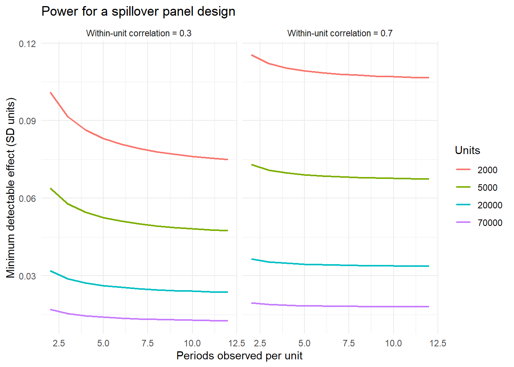

flowchart TB
M1["Move 1: a policy or platform change<br/>restricts one marketing instrument"] --> Q1{"Did behavior<br/>simply stop?"}
Q1 --> M2["Move 2: document the spillover<br/>into the untargeted market"]
M2 --> Q2{"Was the substitution<br/>good or bad for the consumer?"}
Q2 --> M3["Move 3: normative model<br/>defines optimal behavior"]
M3 --> Q3{"Do consumers actually<br/>behave that way?"}
Q3 --> M4["Move 4: mechanism evidence<br/>measures the departures"]
M4 --> Q4{"Is the welfare claim only<br/>as good as the model?"}
Q4 --> M5["Move 5: complementary analysis<br/>on downstream real outcomes"]
M5 --> C["Contribution: a signed, bounded<br/>welfare conclusion with<br/>distributional detail"]
73 Writing the Policy-and-Welfare Paper for Marketing Journals
The preceding three chapters assembled a research architecture: a causal estimate of a spillover into an untargeted market, a normative model that says what optimal behavior looks like, a calibrated welfare bound, and an independent complementary test. The architecture is field-neutral. Whether a paper built on it lands in Management Science, Marketing Science, the Journal of Marketing, the Journal of Marketing Research, the Journal of Consumer Research, or the Journal of Public Policy & Marketing depends on choices about framing, about which component carries the contribution, and about whose decision problem the paper is written for.
This chapter is about those choices. It maps the architecture onto the marketing journals, sets out the five-move template that these papers follow, translates “consumer financial protection” into the marketing-instrument vocabulary that makes the question ours rather than borrowed, supplies a portfolio of concrete project designs, and closes with the objections reviewers raise and how to pre-empt them.
73.1 Why This Paper Type Belongs in Marketing
There is a reflex to treat consumer-protection research as economics that happens to involve consumers. The reflex is wrong for a specific reason: almost every consequential consumer regulation of the past two decades restricts a marketing instrument. Section 304 of the CARD Act did not cap interest rates or limit credit lines; it banned marketing—the tables, the giveaways, the on-campus promotion of a financial product to a young audience (Brown, Grodzicki, and Medina 2026). Advertising bans restrict advertising (Dubois, Griffith, and O’Connell 2018). Privacy regimes restrict targeting and data joins (Goldfarb and Tucker 2011; Johnson, Shriver, and Goldberg 2023; Aridor, Che, and Salz 2023). Do-not-call and anti-spam rules restrict channels (Goh, Hui, and Png 2011). Disclosure mandates restrict message content. Dark-pattern rules restrict interface design.
Once a rule is understood as a constraint on the marketing mix, the questions it raises are marketing questions. What is the cross-elasticity between the restricted instrument and its substitutes? Which segments were reachable only through the restricted instrument? How does the firm reallocate budget, and what does the reallocation do to the consumers who were the rule’s intended beneficiaries? Marketing owns the substitution structure of consumer choice, the measurement of instrument effectiveness, and the models of how firms allocate across instruments. That is a comparative advantage, and it is the argument the introduction of such a paper should make in its second paragraph.
The field’s editorial statements have been explicit that work bearing on consumer and societal welfare is wanted, not tolerated (Chandy et al. 2021; Moorman et al. 2019), and the transformative-consumer-research tradition supplies a well-developed vocabulary for well-being outcomes (Mick et al. 2012; Wilkie and Moore 1999). What has been scarcer is work that combines that orientation with the identification and modeling standards of the quantitative track. The architecture in these chapters is one way to supply it.
73.2 The Journal-Fit Map
The same underlying study can be written five ways. Table 73.1 sets out what each outlet wants as the load-bearing contribution, what role the model plays, and what the review process will attack hardest.
| Outlet | Load-bearing contribution | Role of the normative model | Welfare object | Principal review risk |
|---|---|---|---|---|
| Marketing Science / QME | Identification plus model; a new estimand or a novel identification of substitution | Central; often estimated rather than only calibrated | Consumer surplus, sometimes total surplus | “Why not estimate the model?”; instrument validity |
| Management Science | A general economic mechanism demonstrated in a consequential setting | Central but may be a bounding device | Consumer welfare with explicit assumptions | Generality of the mechanism; robustness of the bound |
| Journal of Marketing Research | A clean causal fact plus measurement innovation | Supporting; disciplines the hypotheses | Behavioral outcome, welfare secondary | Design threats; external validity |
| Journal of Marketing | Managerial and societal implication; framework contribution | Framing device, kept light | Firm outcomes plus consumer well-being | “So what for managers and policymakers?” |
| Journal of Consumer Research | Psychological process; the consumer’s experience of the constraint | Usually replaced by a process theory | Consumer well-being, subjectively measured | Process evidence; alternative accounts |
| Journal of Public Policy & Marketing | Direct policy relevance and prescription | Supporting; the policy question leads | Consumer welfare and distributional equity | Depth of institutional detail; prescriptive clarity |
Two implications are worth stating plainly. First, the Marketing Science version and the Journal of Marketing version are not the same paper with different abstracts—they have different section orders, different figure sets, and different robustness sections. Deciding the outlet after the analysis is finished is a common and expensive mistake. Second, the welfare object is a positioning choice, not merely a technical one: a paper whose welfare object is firm profit is a strategy paper, and one whose object is consumer surplus is a policy paper, and reviewers evaluate them against different literatures.
73.3 The Five-Move Template
Papers with this architecture follow a recognizable sequence, shown in Figure 73.1. Each move answers the objection raised by the previous one, which is why the order is difficult to rearrange.
Move 1 — the institutional shock. Establish that a specific instrument became more costly on a specific date, with enough institutional detail that a reader can see who was exposed and who was not. This section is longer than authors expect and is where the identification is actually won.
Move 2 — the spillover. Estimate the effect on the untargeted market with a design whose control group is defined by exposure rather than geography (Chapter 69). Lead with the event study, not the pooled coefficient. Include the theory-predicted heterogeneity as a specification test.
Move 3 — the normative model. Write down the small model, derive the threshold, and state which departures are possible (Chapter 70). Two to four pages. Resist estimating it.
Move 4 — mechanism. Measure which departures are present and in what proportion, ideally with a record-linked survey (Chapter 72). This section supplies the population shares the welfare calculation needs, so it must come before the welfare section.
Move 5 — welfare and corroboration. Calibrate the bound (Chapter 71), report it by subgroup with a sensitivity analysis, and then present an independent downstream test whose failure modes differ.
Anatomy of the abstract
The anchor paper’s abstract is a compact instance of the template and repays imitation. It names the provision and what it did; concedes that the intended effect occurred (“while it reduced card use”); states the spillover with a magnitude and a distributional split; explains that a survey was designed to assess the substitution and what it revealed; states that model-based evidence implies a welfare gain; and closes with the complementary analysis of academic outcomes. Six sentences, five moves, one concession. The concession is doing strategic work: acknowledging the intended effect first buys the credibility to report the unintended one.
73.4 Translating the Question Into Marketing
The mechanical translation is a substitution of vocabulary, and it is worth doing explicitly at the proposal stage.
| Consumer-finance framing | Marketing framing |
|---|---|
| Restricting a financial product’s marketing | Restricting a marketing instrument in the mix |
| Credit card vs. student loan | Two instruments serving one consumer need, differing in price and flexibility |
| Financial mistake | Departure from the optimal use of a firm’s menu |
| Financial literacy | Category or contract knowledge; consumer expertise |
| Consumer protection | Regulation of marketing practice; platform policy |
| Welfare gain from a nudge | Consumer surplus consequence of choice architecture |
| Substitution into student loans | Cross-instrument or cross-channel substitution elasticity |
| Distributional concentration by income | Segment-level heterogeneity in vulnerability and reachability |
73.5 A Portfolio of Project Designs
What follows are settings in which the full architecture is feasible with data that exists. Each entry names the restricted instrument, the untargeted market where the substitution should appear, the identification handle, the normative benchmark, and the natural outlet. They are starting points to be sharpened, not finished designs.
| # | Setting and shock | Untargeted market | Identification handle | Normative benchmark | Welfare object / outlet |
|---|---|---|---|---|---|
| 1 | Platform bans third-party tracking for an app category | Contextual ads, retail media, email, owned channels | Category-level staggered enforcement; firms differentially reliant on tracking | Optimal reach mix given targeting precision and cost per useful impression | Consumer surplus from match quality; Marketing Science |
| 2 | Buy-now-pay-later disclosure or eligibility rule | Credit cards, overdraft, layaway | Age or state thresholds; retailer rollout timing | Price-vs-flexibility model as in Chapter 70 | Consumer welfare bound; Management Science |
| 3 | Ban on in-app loot-box marketing to minors | Direct purchases, subscriptions, secondary markets | Age gates; jurisdictional variation | Optimal spend given uncertain in-game need and price ratio | Consumer well-being; JPPM or JCR |
| 4 | Restrictions on prescription-drug advertising | Physician detailing, patient search, OTC substitutes | Channel-specific rules by drug class | Optimal information acquisition | Health outcomes plus surplus; Management Science |
| 5 | Removal of a default enrollment in a subscription service | Active enrollment, competitor services, churn | Cohort exposure to the default before and after | Optimal plan given usage uncertainty (Choi et al. 2003) | Consumer surplus and firm profit; JMR |
| 6 | Retailer eliminates a promotional instrument (e.g., coupons) | Loyalty currency, store brands, competing retailers | Chain- or region-level rollout | Optimal purchase timing under stochastic need | Consumer surplus; JMR or Marketing Science |
| 7 | Soda or snack tax with heavy in-store marketing restrictions | Untaxed categories, cross-border purchases, larger formats | Jurisdiction boundaries; scanner panels (Seiler, Tuchman, and Yao 2020) | Optimal consumption given internality (Allcott, Lockwood, and Taubinsky 2019) | Nutritional welfare; JM or Management Science |
| 8 | Ban on influencer marketing without disclosure in a category | Paid search, owned social, affiliate | Platform enforcement dates; creator-level compliance | Optimal information weighting under source uncertainty | Consumer welfare; JCR or JMR |
| 9 | Restriction on data sharing between a bank and its marketing arm | Untargeted mail, branch selling, broker channels | Institution-level compliance timing | Optimal product choice given advice quality (Hastings, Hortaçsu, and Syverson 2017) | Consumer surplus and mis-selling; Management Science |
| 10 | University or employer changes financial-aid or benefits defaults | Private loans, cards, hardship funds | Cohort exposure, as in the anchor study | Price-vs-flexibility model | Welfare bound plus academic or job outcomes; Management Science |
| 11 | Recommender re-ranked toward diversity or safety | Search, direct navigation, off-platform discovery | Algorithm rollout by market or cohort | Optimal consumption variety given search cost (Fleder and Hosanagar 2009) | Consumer surplus and variety; Marketing Science |
| 12 | Dark-pattern rule removes friction-based retention flows | Support channels, competitor switching, dormancy | Regulatory scope by firm size or jurisdiction | Optimal cancellation given switching cost | Consumer surplus; JPPM or JM |
Screening candidate projects before you invest
A project is viable only if all five of the following hold. (1) The shock has a date and a scope you can document from primary sources. (2) The substitute market is observed for the same units. (3) There is exposure variation independent of the shock date. (4) The two instruments have posted or recoverable prices, since the normative cutoff is a price ratio. (5) A downstream outcome exists that theory says should move. Failing (2) or (3) kills the project; failing (4) downgrades it from a welfare paper to a substitution paper, which is still publishable but in a different place.
73.5.1 Sizing the design before collecting data
Spillover effects are second-order by construction—a fraction of an already modest first-order effect—so power is a real constraint rather than a formality. The calculation below gives the minimum detectable effect for a two-group panel design of the kind used throughout these chapters, as a function of the number of units and the within-unit correlation of the outcome.
Code
library(ggplot2)
mde <- function(n_units, n_periods, rho = 0.6, p_treat = 0.5,
power = 0.80, alpha = 0.05) {
# Design effect for repeated measures on the same unit.
deff <- 1 + (n_periods - 1) * rho
n_eff <- n_units * n_periods / deff
(qnorm(1 - alpha / 2) + qnorm(power)) *
sqrt(1 / (n_eff * p_treat * (1 - p_treat)))
}
pw <- expand.grid(n_units = c(2000, 5000, 20000, 70000),
n_periods = 2:12, rho = c(0.3, 0.7))
pw$mde <- mapply(mde, pw$n_units, pw$n_periods, pw$rho)
ggplot(pw, aes(n_periods, mde, colour = factor(n_units))) +
geom_line(linewidth = 0.8) +
facet_wrap(~ paste("Within-unit correlation =", rho)) +
scale_colour_discrete(name = "Units") +
labs(x = "Periods observed per unit",
y = "Minimum detectable effect (SD units)",
title = "Power for a spillover panel design") +
theme_minimal(base_size = 11)
The practical reading: with the roughly 70,000 students and eight semesters of the anchor study, effects well under a tenth of a standard deviation are detectable, which is why an 8 percent movement in balances could be estimated precisely enough to support subgroup analysis. A study with two thousand units and three periods is not going to find a spillover unless it is enormous, and should be redesigned rather than run.
73.6 The Reviewer Objection Playbook
Table 73.4 lists the objections this paper type reliably attracts, in roughly the order they appear in reports, with the response that works and the response that does not.
| Objection | Response that works | Response that fails |
|---|---|---|
| “The effect is a confound from the concurrent macro shock” | An enumerated gauntlet pairing each channel with a test whose result would differ under the rival (Table 69.2) | More controls; a longer robustness table of the same specification |
| “Why not estimate the structural model?” | Show the welfare conclusion holds for an entire preference class; state which functional forms theory cannot discipline | Estimating it anyway with an arbitrary form |
| “Your survey postdates the policy” | Name the assumption, test it against contemporaneous outside surveys, and show the direction of any bias | Asserting the sample is representative |
| “Welfare rests on your calibration” | Publish the ledger, the break-even value of the pivotal input, and the surface over the two quantities that matter | Reporting a single point estimate with a standard error |
| “This is a finance paper” | Frame as marketing-instrument regulation; connect to cross-instrument substitution and segment reachability (Table 73.2) | Adding a paragraph on managerial implications at the end |
| “The complementary analysis looks harvested” | Pre-commit it, motivate it from the theory before estimating, and include a placebo outcome | Reporting five downstream outcomes and discussing the two that moved |
| “What should a manager or regulator do?” | A stated decision rule in the units of the decision: the break-even shock probability, the segment where the sign flips | A generic call for consumer education |
| “External validity: one institution, one product” | Argue the mechanism’s scope conditions explicitly and show the price ratio and shock probability that would be needed elsewhere | Claiming the setting is representative |
73.7 Writing Craft
A few conventions distinguish papers of this type that read well from those that read defensively.
Concede the intended effect first. The rule worked on its own terms; say so in the abstract. Papers that suppress the intended effect to dramatize the unintended one read as advocacy.
Label the epistemic status of every claim. “We estimate,” “model-based evidence implies,” and “this is suggestive” are three different commitments. Using the strongest available verb for the weakest available evidence is the fastest way to lose a referee.
Put the distributional result in the abstract. The average effect is rarely the interesting one in a policy paper, and the subgroup pattern is usually what a policy audience acts on. “Eight percent on average, fifteen percent among the less affluent” is a better sentence than either number alone.
Give the reader one number to remember. In the anchor paper it is the break-even shock probability implied by the rate ratio. A policy paper that leaves the reader with a rule of thumb travels further than one that leaves them with a table.
Write the model section for someone who will skip it. State the result of the model in prose immediately before the algebra, so a behavioral reader gets the threshold intuition and a quantitative reader gets the derivation.
The general craft conventions—framing a contribution, structuring an introduction, handling the review process—are treated at length in Chapter 74 and Chapter 75, and the reporting standards a multi-method paper must meet are in Chapter 76.
73.8 Key Takeaways
- Most modern consumer regulation restricts a marketing instrument, which makes the substitution, effectiveness, and reachability questions it raises marketing questions with a marketing comparative advantage.
- The same study is a different paper at each outlet (Table 73.1); choose the target before the analysis is finished, because the section order, figure set, and welfare object all follow from it.
- The five-move template (Figure 73.1)—shock, spillover, normative model, mechanism, welfare plus corroboration—is ordered so that each move answers the objection raised by the previous one.
- Translate the vocabulary deliberately (Table 73.2); it is what connects the paper to marketing literatures instead of importing an economics debate.
- Screen candidate projects on five conditions, of which the binding ones are observing the same units in both markets and having exposure variation independent of the policy date.
- Power for spillover designs is a real constraint: second-order effects on sticky outcomes need large panels, and the design should be sized before data collection.
- Every effective response in the objection playbook (Table 73.4) is something built into the design in advance; none can be manufactured during a revision.
- In the writing, concede the intended effect first, label the epistemic status of each claim, put the distributional result in the abstract, and leave the reader with one decision-relevant number.
73.9 Further Reading
Brown, Grodzicki, and Medina (2026) is the model instance of the architecture; read its abstract and section order alongside Table 73.1. For the field’s editorial positioning of welfare-relevant work, Chandy et al. (2021) and Moorman et al. (2019), with Wilkie and Moore (1999) for the historical statement and Mick et al. (2012) for the transformative-consumer-research tradition. On what constitutes a contribution and how to frame one, MacInnis (2011) and Yadav (2010). Exemplars to study for how marketing journals handle regulation and welfare include Rao and Wang (2017) on false claims and enforcement, Seiler, Tuchman, and Yao (2020) on tax pass-through and avoidance, Tuchman (2019) on advertising restrictions for addictive goods, Mrkva et al. (2021) on the distributional consequences of choice architecture, Goh, Hui, and Png (2011) on contact regulation, and Tucker (2014) and Johnson, Shriver, and Goldberg (2023) on privacy regimes. For the economics-side exemplars whose structure marketing papers can borrow, Agarwal et al. (2015), Handel (2013), Allcott and Kessler (2019), and Dubois, Griffith, and O’Connell (2018). Misra and Nair (2011) remains the best marketing demonstration that a calibrated model can be validated by implementing its prescription in the field. The methodological components are developed in Chapter 69, Chapter 70, Chapter 71, and Chapter 72.
Agarwal, Sumit, Souphala Chomsisengphet, Neale Mahoney, and Johannes Stroebel. 2015. “Regulating Consumer Financial Products: Evidence from Credit Cards.” The Quarterly Journal of Economics 130 (1): 111–64. https://doi.org/10.1093/qje/qju037.
Allcott, Hunt, and Judd B. Kessler. 2019. “The Welfare Effects of Nudges: A Case Study of Energy Use Social Comparisons.” American Economic Journal: Applied Economics 11 (1): 236–76. https://doi.org/10.1257/app.20170328.
Allcott, Hunt, Benjamin B. Lockwood, and Dmitry Taubinsky. 2019. “Regressive Sin Taxes, with an Application to the Optimal Soda Tax.” The Quarterly Journal of Economics 134 (3): 1557–1626. https://doi.org/10.1093/qje/qjz017.
Aridor, Guy, Yeon-Koo Che, and Tobias Salz. 2023. “The Effect of Privacy Regulation on the Data Industry: Empirical Evidence from GDPR.” The RAND Journal of Economics 54 (4): 695–730. https://doi.org/10.1111/1756-2171.12455.
Brown, Alexander L., Daniel Grodzicki, and Paolina C. Medina. 2026. “When Consumer Financial Protection Spills over: Student Loan Borrowing Under the CARD Act.” Management Science. https://doi.org/10.1287/mnsc.2024.06339.
Chandy, Rajesh K., Gita Venkataramani Johar, Christine Moorman, and John H. Roberts. 2021. “Better Marketing for a Better World.” Journal of Marketing 85 (3): 1–9. https://doi.org/10.1177/00222429211003690.
Choi, James J., David Laibson, Brigitte C. Madrian, and Andrew Metrick. 2003. “Optimal Defaults.” American Economic Review 93 (2): 180–85. https://doi.org/10.1257/000282803321947010.
Dubois, Pierre, Rachel Griffith, and Martin O’Connell. 2018. “The Effects of Banning Advertising in Junk Food Markets.” The Review of Economic Studies 85 (1): 396–436. https://doi.org/10.1093/restud/rdx025.
Fleder, Daniel, and Kartik Hosanagar. 2009. “Blockbuster Culture’s Next Rise or Fall: The Impact of Recommender Systems on Sales Diversity.” Management Science 55 (5): 697–712. https://doi.org/10.1287/mnsc.1080.0974.
Goh, Khim-Yong, Kai-Lung Hui, and Ivan P. L. Png. 2011. “Newspaper Reports and Consumer Choice: Evidence from the Do Not Call Registry.” Management Science 57 (9): 1640–54. https://doi.org/10.1287/mnsc.1110.1392.
Goldfarb, Avi, and Catherine E. Tucker. 2011. “Privacy Regulation and Online Advertising.” Management Science 57 (1): 57–71. https://doi.org/10.1287/mnsc.1100.1246.
Handel, Benjamin R. 2013. “Adverse Selection and Inertia in Health Insurance Markets: When Nudging Hurts.” American Economic Review 103 (7): 2643–82. https://doi.org/10.1257/aer.103.7.2643.
Hastings, Justine S., Ali Hortaçsu, and Chad Syverson. 2017. “Sales Force and Competition in Financial Product Markets: The Case of Mexico’s Social Security Privatization.” Econometrica 85 (6): 1723–61. https://doi.org/10.3982/ecta12302.
Johnson, Garrett A., Scott K. Shriver, and Samuel G. Goldberg. 2023. “Privacy and Market Concentration: Intended and Unintended Consequences of the GDPR.” Management Science 69 (10): 5695–5721. https://doi.org/10.1287/mnsc.2023.4709.
MacInnis, Deborah J. 2011. “A Framework for Conceptual Contributions in Marketing.” Journal of Marketing 75 (4): 136–54. https://doi.org/10.1509/jmkg.75.4.136.
Mick, David Glen, Simone Pettigrew, Cornelia Pechmann, and Julie L. Ozanne, eds. 2012. Transformative Consumer Research for Personal and Collective Well-Being. New York: Routledge. https://doi.org/10.4324/9780203813256.
Misra, Sanjog, and Harikesh S Nair. 2011. “A Structural Model of Sales-Force Compensation Dynamics: Estimation and Field Implementation.” Quantitative Marketing and Economics 9: 211–57.
Moorman, Christine, Harald J. van Heerde, C. Page Moreau, and Robert W. Palmatier. 2019. “Challenging the Boundaries of Marketing.” Journal of Marketing 83 (5): 1–4. https://doi.org/10.1177/0022242919867086.
Mrkva, Kellen, Nathaniel A. Posner, Crystal Reeck, and Eric J. Johnson. 2021. “EXPRESS: Do Nudges Reduce Disparities? Choice Architecture Compensates for Low Consumer Knowledge.” Journal of Marketing, January, 002224292199318. https://doi.org/10.1177/0022242921993186.
Rao, Anita, and Emily Wang. 2017. “Demand for “Healthy” Products: False Claims and FTC Regulation.” Journal of Marketing Research 54 (6): 968–89. https://doi.org/10.1509/jmr.15.0398.
Seiler, Stephan, Anna Tuchman, and Song Yao. 2020. “The Impact of Soda Taxes: Pass-Through, Tax Avoidance, and Nutritional Effects.” Journal of Marketing Research 58 (1): 22–49. https://doi.org/10.1177/0022243720969401.
Tuchman, Anna E. 2019. “Advertising and Demand for Addictive Goods: The Effects of E-Cigarette Advertising.” Marketing Science, October. https://doi.org/10.1287/mksc.2019.1195.
Wilkie, William L., and Elizabeth S. Moore. 1999. “Marketing’s Contributions to Society.” Journal of Marketing 63 (4_suppl1): 198–218. https://doi.org/10.1177/00222429990634s118.
Yadav, Manjit S. 2010. “The Decline of Conceptual Articles and Implications for Knowledge Development.” Journal of Marketing 74 (1): 1–19. https://doi.org/10.1509/jmkg.74.1.1.